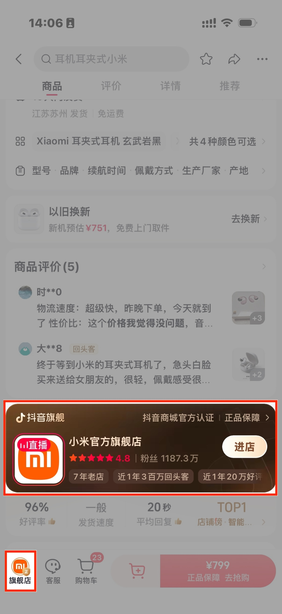
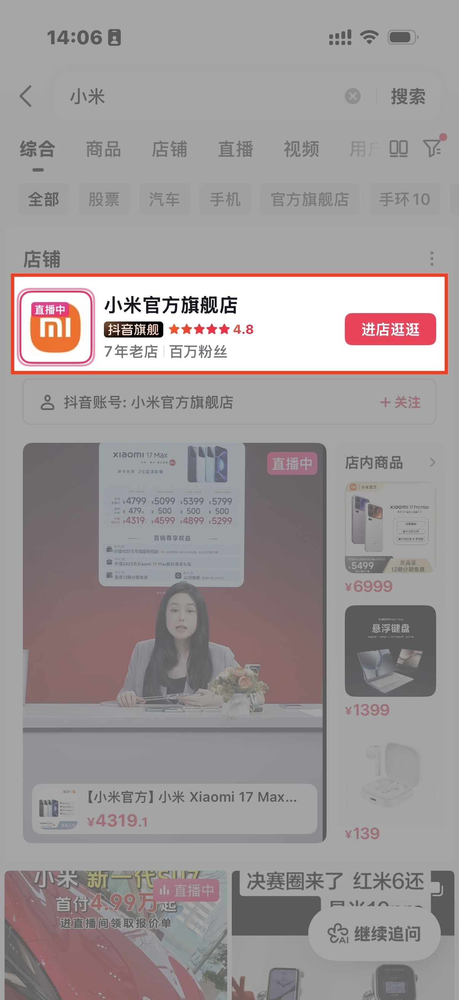
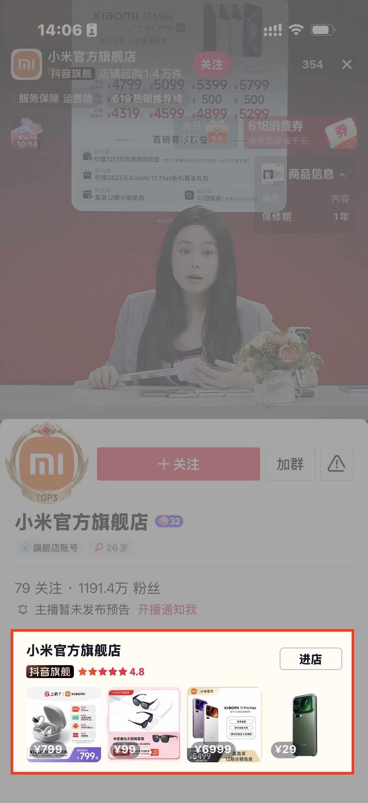
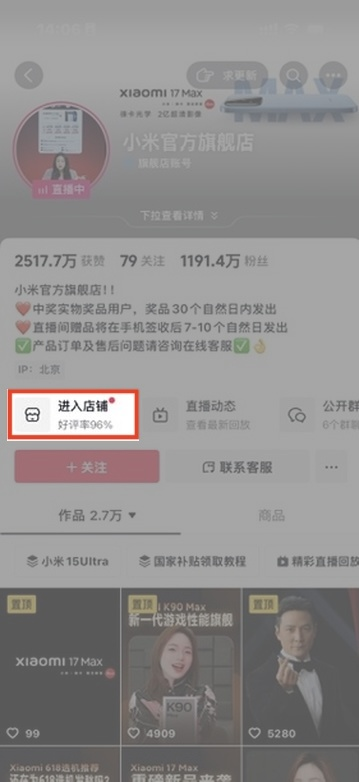
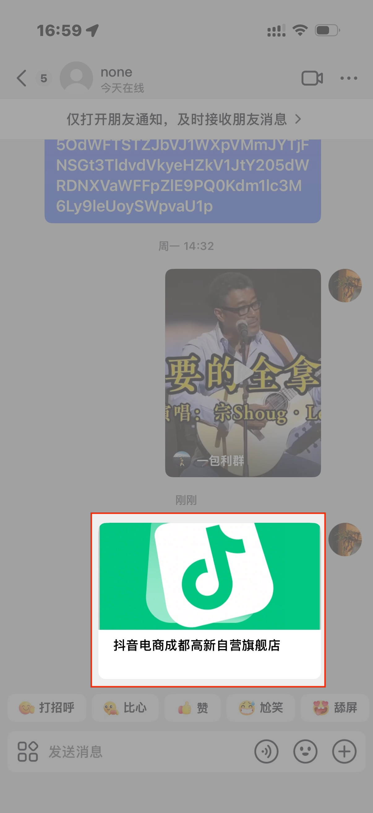
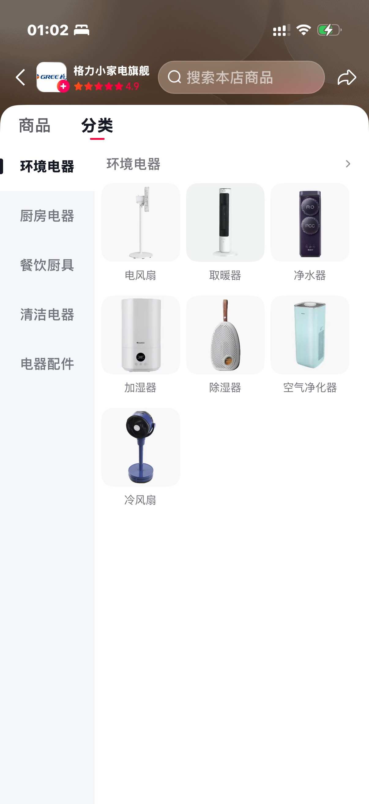
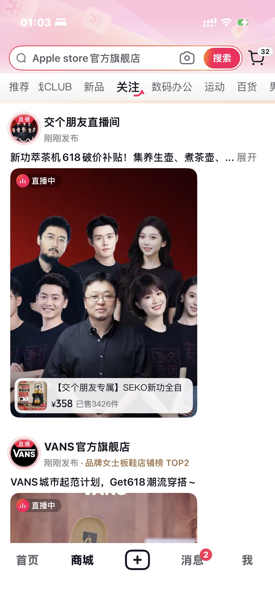
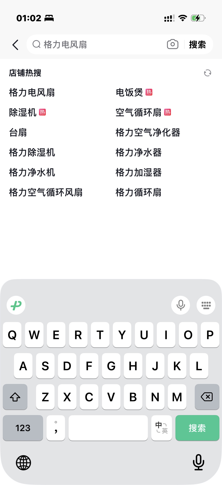

MAC 流量入口与店铺基础体验
- 背景
- 店铺需要在商品详情、搜索、直播、账号主页和分享链路里稳定承接自然流量。
- 我做的事
- 围绕 MAC 流量入口建设店铺橱窗能力，沉淀可复用的进店组件、状态表达和多宿主适配方案。
- 关注结果
- 让进店入口在不同页面形态下保持一致、可追踪、可灰度，也建立了我对高流量消费者链路的系统理解。
2021 — 2022 · MAC 流量入口
把店铺橱窗铺到用户会经过的高曝光位置
这阶段的核心不是单独做一个页面，而是把“进店”这件事做成一套可以被商品、搜索、直播、账号主页和私信分享等场景复用的入口能力。前端需要处理不同宿主的展示约束、埋点口径、降级兜底和迭代节奏。
- 入口场景
- 商品详情、搜索、直播、主页、私信分享
- 工程关注
- 组件复用、多宿主适配、曝光点击追踪、异常兜底





2022 · 店铺基础体验
补齐店铺里的基础浏览、关注和搜索发现能力
MAC 入口把用户带进店铺后，店内还需要稳定的基础体验承接：分类 Tab 帮用户快速理解商品结构，关注的店把店铺内容沉淀成可持续访问的关系，店铺热搜词则降低搜索成本，让用户更快进入具体商品和品类。


